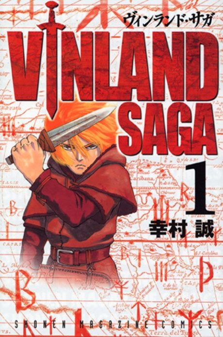

Animeter
 Anime
Anime
Manga2019 · Action, Adventure, Drama
Vinland Saga
ヴィンランド・サガ
AniList8.7
Animeter—
Season 124 ep
MangaCh. 101
Key events
These are spoilers. They stay blurred until you reveal them, one at a time or all at once.
Thors and Iceland Ep 1–6
- Thors is revealed to be a deserter from the elite Jomsvikings.
- Thors is ambushed and killed by Askeladd's band after defeating them all without a sword.
- Thorfinn stows away with Askeladd, vowing to kill him in a duel.
Askeladd's Band and London Bridge Ep 7–12
- Thorfinn earns duels by completing dangerous missions but keeps losing.
- The giant Thorkell defends London Bridge for the English against the Danes.
- Askeladd seizes the young Prince Canute after Thorkell turns on the Danes.
Canute's Journey Ep 13–20
- Askeladd recruits help from Wales by playing on his own Welsh lineage.
- Thorfinn duels Thorkell, who is delighted to find a worthy opponent.
- Canute awakens to his ambition after Ragnar's death and breaks with his priest's teachings.
End of the Prologue Ep 21–24
- Askeladd's Welsh ancestry and his true goals are revealed.
- Askeladd kills King Sweyn to protect Wales and Canute's path to the throne.
- Canute kills Askeladd, and a devastated Thorfinn loses his reason for living.
Ketil's Farm (Slave) Ep 25–34
- Thorfinn and Einar strike a deal to earn their freedom by clearing a forest.
- Thorfinn is haunted by dreams of those he killed.
- Thorfinn vows never to kill again.
Gardar and Arnheid Ep 35–41
- Canute is haunted by the decision that made him king.
- Gardar comes to the farm to get Arnheid, and Thorfinn and Einar help her escape.
- Arnheid and Gardar are punished, and both die.
War at Ketil's Farm Ep 42–48
- Canute's army attacks the farm.
- Thorfinn takes a hundred punches without fighting back to earn an audience with the king.
- Thorfinn convinces Canute to spare the farm.
- Thorfinn returns home to Iceland and plans a peaceful land in Vinland.